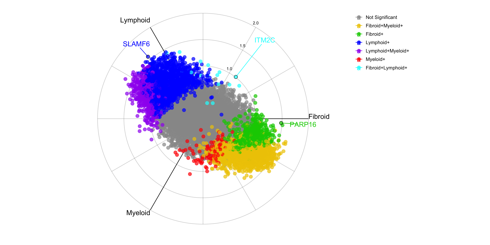
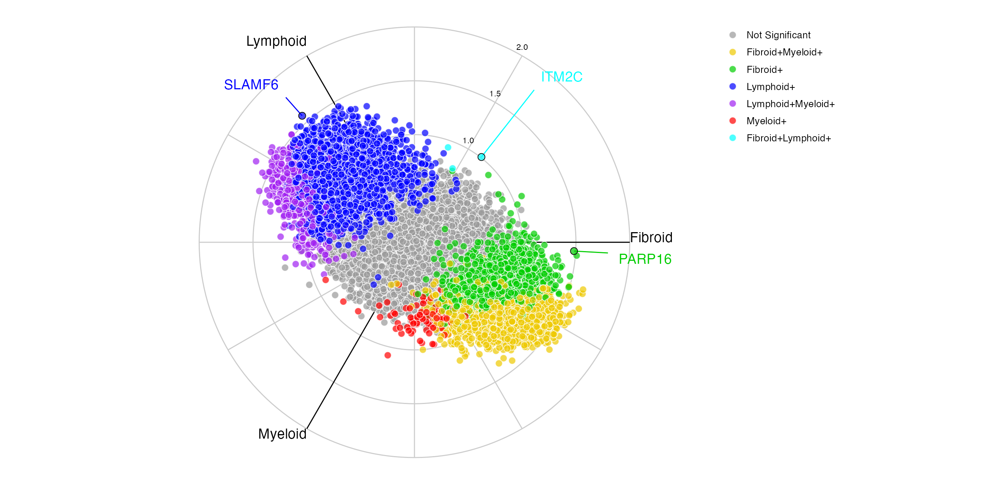

Introduction
This vignette provides an example for creating pvalues objects for the volcano3D pipeline using DESeq2 and Limma-voom.
This example consists of a case study from the PEAC rheumatoid arthritis project (Pathobiology of Early Arthritis Cohort). The methodology has been published in Lewis, Myles J., et al. ‘Molecular portraits of early rheumatoid arthritis identify clinical and treatment response phenotypes.’ Cell reports 28.9 (2019): 2455-2470. (DOI: 10.1016/j.celrep.2019.07.091) with an interactive web tool available at https://peac.hpc.qmul.ac.uk.
Getting Started
Install from Github
library(devtools) install_github("KatrionaGoldmann/volcano3D") library(volcano3D)
The sample data used in this vignette can be loaded from the volcano3Ddata package. This is only possible after volcano3D is imported.
install.packages("volcano3Ddata")
Setup
To create a pvalues data frame we require:
- the txi or expression data with columns representing different samples and rows representing different variables
- The sample data which contains information for each sample in rows.
These can both be loaded from the syn_txi dataset in the volcano3Ddata package.
Check the alignment and make sure there are only three possible contrasts (in this case three unique Pathotypes)
if(! identical(syn_metadata$ID, colnames(syn_txi$abundance))){ stop("mis-aligned") } if(length(levels(syn_metadata$Pathotype)) != 3){ stop("The number of unique pathotypes must qual 3") } groups <- levels(syn_metadata$Pathotype) contrasts <- c(paste(groups[1], groups[2], sep="-"), paste(groups[2], groups[3], sep="-"), paste(groups[3], groups[1], sep="-"))
Our comparisons of interest are set up as:
Fibroid-LymphoidLymphoid-MyeloidMyeloid-Fibroid
In this vignette we will outline two methods to determine the differential gene expression:
DESeq method
The DESeq2 vignette can be found here. We will use this to calculate the differential expression between groups/pathotypes.
The Pathotype, Batch and Gender are used in the DESeq design to determine how the counts for each gene depend on each of these variables. A likelihood ratio test (LRT) is calculated using a reduced design of Batch and Gender to highlight the effects of Pathotype.
library(DESeq2) dds = DESeqDataSetFromTximport(txi = syn_txi, colData = syn_metadata, design = ~Pathotype+Batch+Gender) dds_DE <- DESeq(dds) dds_LRT <- DESeq(dds, test = "LRT", reduced = ~Batch+Gender, parallel = TRUE)
Now we can get the results for each contrast and the LRT:
Pvals_DESeq_DE <- lapply(contrasts, function(x){ vars <- unlist(strsplit(x, split="-")) out <- results(dds_DE, contrast=c("Pathotype", vars)) out <- out[match(rownames(syn_txi$counts), rownames(out)), ] out <- out[,c("pvalue", "padj", "log2FoldChange")] }) LRT <- results(dds_LRT, parallel=TRUE)[, c("pvalue", "padj", "log2FoldChange")] LRT <- LRT[match(rownames(syn_txi$counts), rownames(LRT)), ]
The results can then be combined into one pvalues data frame:
Pvals_DESeq <- cbind(Pvals_DESeq_DE[[1]], Pvals_DESeq_DE[[2]], Pvals_DESeq_DE[[3]], LRT) colnames(Pvals_DESeq) <- c(paste(rep(contrasts, each=3), rep(colnames(Pvals_DESeq_DE[[1]]), 3)), paste("LRT", colnames(LRT))) Pvals_DESeq <- Pvals_DESeq[complete.cases(Pvals_DESeq), ]
Now we can inspect:
head(Pvals_DESeq) %>% kable() %>% kable_styling(font_size=8.7)
| Fibroid-Lymphoid pvalue | Fibroid-Lymphoid padj | Fibroid-Lymphoid log2FoldChange | Lymphoid-Myeloid pvalue | Lymphoid-Myeloid padj | Lymphoid-Myeloid log2FoldChange | Myeloid-Fibroid pvalue | Myeloid-Fibroid padj | Myeloid-Fibroid log2FoldChange | LRT pvalue | LRT padj | LRT log2FoldChange | |
|---|---|---|---|---|---|---|---|---|---|---|---|---|
| A2M | 0.7775361 | 0.8851935 | -0.0478326 | 0.1563045 | 0.3384292 | -0.2202768 | 0.1694654 | 0.4916679 | 0.2681094 | 0.2739571 | 0.4353436 | 0.0527816 |
| A2ML1 | 0.0002106 | 0.0011118 | 1.6854024 | 0.0000030 | 0.0000793 | -1.9299687 | 0.6348844 | 0.8441036 | 0.2445664 | 0.0000022 | 0.0000202 | 0.3983423 |
| A4GALT | 0.0000000 | 0.0000000 | 1.0248506 | 0.0000192 | 0.0003539 | -0.5646665 | 0.0055222 | 0.1009600 | -0.4601841 | 0.0000000 | 0.0000000 | 0.2121462 |
| A4GNT | 0.0238302 | 0.0610621 | -1.1527859 | 0.6691773 | 0.8180681 | -0.1857435 | 0.0197330 | 0.1893057 | 1.3385294 | 0.0732984 | 0.1583021 | -0.1939520 |
| AAAS | 0.8574281 | 0.9383721 | -0.0245296 | 0.6608837 | 0.8124146 | 0.0548697 | 0.8469982 | 0.9435306 | -0.0303402 | 0.9075226 | 0.9711813 | 0.3523114 |
| AACS | 0.2815302 | 0.4322015 | 0.1729592 | 0.0630182 | 0.1821943 | -0.2732040 | 0.5874802 | 0.8169632 | 0.1002448 | 0.1472059 | 0.2732938 | -0.2881377 |
Limma method
The limma vignette can be found here and limma-voom tutorial here. These can both be used to calculate the differential expression between pathotype groups.
As with DESeq we use pathotype, batch and gender in the model design:
library(limma) library(edgeR) syn_tpm = syn_txi$counts # build the design matrix and contrast matrix design <- model.matrix(~0 + syn_metadata$Pathotype + syn_metadata$Batch + syn_metadata$Gender) colnames(design) <- gsub("syn_metadata", "", colnames(design)) colnames(design) <- gsub("\\$Pathotype|\\$Batch|\\$Gender", "", colnames(design)) contrast.matrix <- makeContrasts( paste0(colnames(design)[1] , "-", colnames(design)[2]), paste0(colnames(design)[2] , "-", colnames(design)[3]), paste0(colnames(design)[3] , "-", colnames(design)[1]), levels = design) # filter data and normalise dge <- DGEList(counts = syn_tpm) keep <- filterByExpr(dge, design) dge <- dge[keep, , keep.lib.sizes=FALSE] dge <- calcNormFactors(dge) # voom v <- voom(dge, design, plot=FALSE) fit1 <- lmFit(v, design) fit <- contrasts.fit(fit1, contrast.matrix) fit <- eBayes(fit)
Now we can get the model fit results for each contrast, as well as the overall fit.
contrasts <- colnames(coefficients(fit)) Pvals_limma_DE <- lapply(contrasts, function(x){ id = which(colnames(coefficients(fit)) == x) out <- topTable(fit, adjust.method = "fdr", coef= id, number=Inf, sort.by="none") rownames(out) <- make.names(out$ID, unique=T) out <- out[,c("P.Value", "adj.P.Val", "logFC")] colnames(out) <- c("pvalue", "padj", "log2FoldChange") out }) Pvals_overall <- topTable(fit, coef=1:3, adjust.method="fdr", number=Inf, sort.by="none")[,c("P.Value", "adj.P.Val")] colnames(Pvals_overall) <- c("pvalue", "padj")
The results can then be combined into one pvalues data frame:
Pvals_limma <- cbind(Pvals_limma_DE[[1]], Pvals_limma_DE[[2]], Pvals_limma_DE[[3]], Pvals_overall) colnames(Pvals_limma) <- c(paste(rep(contrasts, each=3), rep(colnames(Pvals_limma_DE[[1]]), 3)), paste("Overall", colnames(Pvals_overall)))
Now we can inspect:
head(Pvals_limma) %>% kable() %>% kable_styling(font_size=8.7)
| Fibroid-Lymphoid pvalue | Fibroid-Lymphoid padj | Fibroid-Lymphoid log2FoldChange | Lymphoid-Myeloid pvalue | Lymphoid-Myeloid padj | Lymphoid-Myeloid log2FoldChange | Myeloid-Fibroid pvalue | Myeloid-Fibroid padj | Myeloid-Fibroid log2FoldChange | Overall pvalue | Overall padj | |
|---|---|---|---|---|---|---|---|---|---|---|---|
| A2M | 0.5213439 | 0.6401092 | -0.1121102 | 0.2368172 | 0.4576502 | -0.1963607 | 0.1353371 | 0.4634288 | 0.3084709 | 0.2978854 | 0.4383275 |
| A2ML1 | 0.0134202 | 0.0366864 | 1.2261464 | 0.0607025 | 0.1887699 | -0.8597833 | 0.5017315 | 0.7822669 | -0.3663631 | 0.0227111 | 0.0600819 |
| A4GALT | 0.0000000 | 0.0000000 | 1.0152822 | 0.0000240 | 0.0007359 | -0.5793596 | 0.0094885 | 0.1671104 | -0.4359227 | 0.0000000 | 0.0000000 |
| A4GNT | 0.1008437 | 0.1840700 | -0.9267408 | 0.8657007 | 0.9371160 | 0.0819539 | 0.1829385 | 0.5259396 | 0.8447869 | 0.2398124 | 0.3758873 |
| AAAS | 0.5119104 | 0.6321412 | 0.0752236 | 0.9469715 | 0.9768394 | 0.0068747 | 0.5294546 | 0.7988073 | -0.0820982 | 0.7765364 | 0.8530610 |
| AACS | 0.1751713 | 0.2816575 | 0.2311172 | 0.0585568 | 0.1842614 | -0.2904260 | 0.7532909 | 0.9111897 | 0.0593087 | 0.1163774 | 0.2188361 |
Using the Pvalues Objects
Both the deseq and limma-voom pvalues objects can then be used to create various plots with the volcano3D package as outlined in the vignette.
First lets load in the expression data.
With DESeq
# Curate the expression data syn_exp = syn_rld rownames(syn_exp) = make.names(rownames(syn_exp), unique = T) # Align the expression and pvalue data syn_exp = syn_exp[intersect(rownames(Pvals_DESeq), rownames(syn_exp)), ] Pvals_DESeq = Pvals_DESeq[intersect(rownames(Pvals_DESeq), rownames(syn_exp)), ] syn_polar_deseq <- polar_coords(sampledata = syn_metadata, contrast = "Pathotype", pvalues = Pvals_DESeq, expression = syn_exp, p_col_suffix = "pvalue", padj_col_suffix = "padj", fc_col_suffix = "log2FoldChange", multi_group_prefix = "LRT", non_sig_name = "Not Significant", significance_cutoff = 0.01, label_column = NULL, fc_cutoff = 0.1)
This can be used for plotting with any of the volcano3D functions. For example:
radial_ggplot(polar = syn_polar_deseq, colours=c("green3", "cyan", "gold2", "blue", "purple", "red"), label_rows = c("SLAMF6", "PARP16", "ITM2C"), legend_size=10) + ggplot2::theme(legend.position = "right")

With Limma
The only difference here is we change the multi_group_prefix to “Overall” and remove the fold change parameter.
# Curate the expression data syn_exp = syn_rld rownames(syn_exp) = make.names(rownames(syn_exp), unique = T) # Align the expression and pvalue data syn_exp = syn_exp[intersect(rownames(Pvals_limma), rownames(syn_exp)), ] Pvals_limma = Pvals_limma[intersect(rownames(Pvals_limma), rownames(syn_exp)), ] syn_polar_limma <- polar_coords(sampledata = syn_metadata, contrast = "Pathotype", pvalues = Pvals_limma, expression = syn_exp, p_col_suffix = "pvalue", padj_col_suffix = "padj", fc_col_suffix = "log2FoldChange", multi_group_prefix = "Overall", non_sig_name = "Not Significant", significance_cutoff = 0.01, label_column = NULL, fc_cutoff = 0.1)
This can be used for plotting with any of the volcano3D functions. For example:
radial_ggplot(polar = syn_polar_limma, colours=c("green3", "cyan", "gold2", "blue", "purple", "red"), label_rows = c("SLAMF6", "PARP16", "ITM2C"), legend_size=10) + ggplot2::theme(legend.position = "right")

Katriona Goldmann
PhD Student · Queen Mary University London · The Alan Turing Institute
· _katriona · · @turing.ac.uk · @qmul.ac.uk